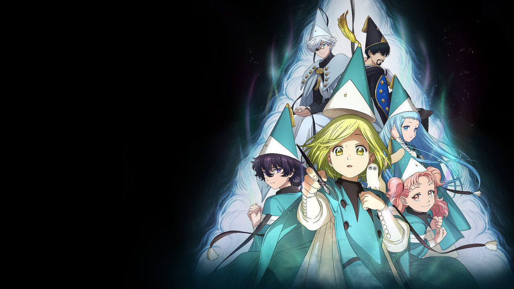

Witch Hat Atelier

Coco siempre ha estado fascinada por la magia. Por desgracia, solo los hechiceros pueden practicar este arte y los agraciados son elegidos desde su nacimiento.
Un día, Qifrey, un mago, llega al pueblo de la niña. Al espiarla, Coco comprende la verdadera naturaleza de la magia y recuerda un libro y un tintero que le compró a un misterioso desconocido cuando era niña…
Pero, en su ignorancia, ¡Coco comete un acto trágico!
Pagina Principal